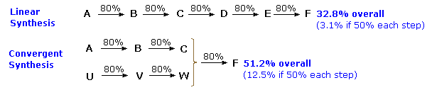
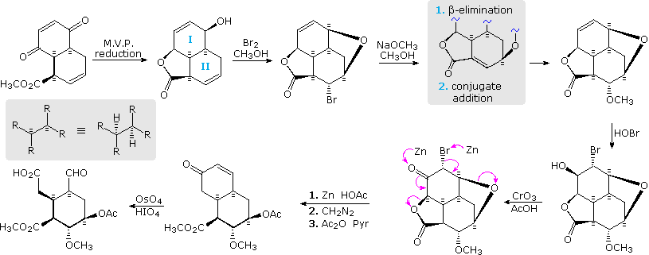
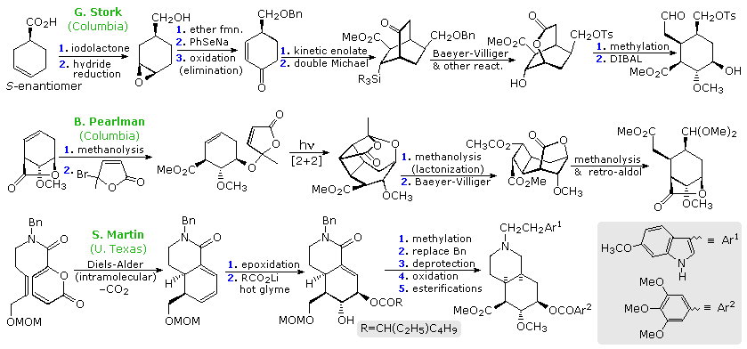
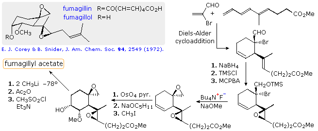
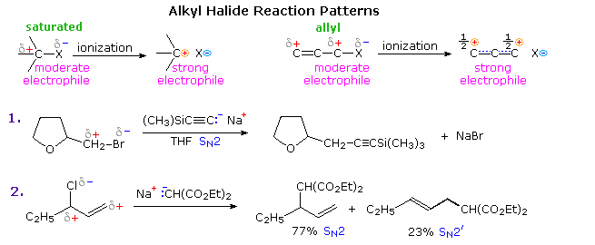
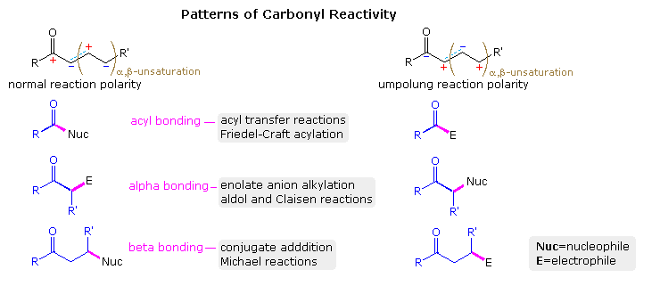
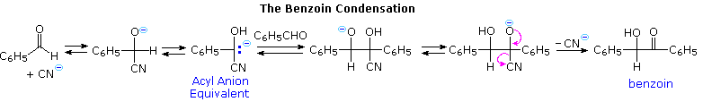
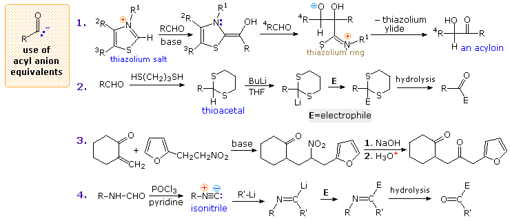
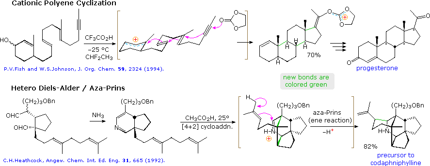

A multi-step synthesis of any organic compound requires the chemist to accomplish three related tasks: 1. Constructing the carbon framework or skeleton of the desired molecule. 2. Introducing, removing or transforming functional groups in a fashion that achieves the functionality of the desired compound. 3. Exercising selective stereocontrol at all stages in which centers of stereoisomerism are created or influenced. These are not discrete independent tasks to be attacked and solved in turn, but must be integrated and correlated in an overall plan. Thus, the assembly of the molecular framework will depend in part on the structure and functionality of available starting materials, the selectivity (regio and stereo) of the various reactions that may be used to stitch them together, and the loss or relocation of functional groups in the intermediate compounds formed on the way to the final product.
Other factors must also be considered, always in context with those listed above: 4. Since a successful synthesis must produce the desired product in reasonable amount, it should be as short and efficient as possible. A two or three-step sequence is usually better than a six or seven step procedure, even if the individual step yields are better in the longer route. Most reactions do not proceed in 100% yield, and the losses are multiplied with each additional step. Furthermore, a long multi-step synthesis requires many hours of effort by the chemists conducting the reactions. 5. The format of a synthesis is important. Assuming a constant yield for each step, a linear sequence of reactions gives a poorer overall yield than the same number of convergent reactions, as shown in the following diagram.

Over the course of the past hundred years, a very large number of syntheses for a wide variety of compounds have been recorded. For all but the simplest of these, a majority of the reactions in the synthesis involve functional group modification, preceding or following a smaller number of carbon-carbon bond forming reactions. Because functional group chemistry consists of such a vast number of addition, elimination and substitution interconversions, it is not possible to identify a general pattern in their application to synthesis. Instead, an example from the synthesis of reserpine by the R. B. Woodward group (Harvard), displayed in the following diagram, will serve to illustrate the importance of regio and stereo-control in the course of functional group modification. The bicyclic carbon compound at the upper left is formed by a Diels-Alder cycloaddition of 1,4-benzoquinone with methyl trans-2,4-pentadienoate. Suprafacial endo addition fixes the relative configuration of the three stereogenic centers as two new carbon-carbon bonds are formed. The convex outer face of this molecule is more accessible (less hindered) to attack by reagents than is the inner concave surface; consequently hydride addition to the carbonyl groups takes place selectively as shown. Of the two disubstituted double bonds in the product, that in ring II is more reactive toward halogen electrophiles than that in ring I (note the electron withdrawing nature of the two oxygens on the latter). Thus, electrophilic bromine attacks the convex face of the ring II double bond, and the free hydroxyl group on ring I is ideally positioned to open the bromonium intermediate in a trans-diaxial fashion, forming a fourth (oxide) ring. Nucleophilic substitution of the resulting axial bromine by methoxide takes place with retention of configuration, and therefore must not be an SN2 reaction. An elimination-conjugate addition sequence (gray shaded box) accounts nicely for this result.

HOBr addition to the remaining double bond also takes place in a trans-diaxial fashion, with initial attack at the convex face. Oxidation of the bromohydrin by chromic acid yields an α-bromo ketone. Zinc and other active metals serve to reductively eliminate α-substituted ketones and vicinal dihalides and halohydrin derivatives. In this manner the five-membered lactone and cyclic ether were both cleaved, yielding a γ-hydroxy acid that was converted to an acetate methyl ester. Finally, oxidative degradation of the ring I enone leads to a pentasubstituted cyclohexane incorporating five different functional groups and five specific stereogenic centers. The remaining steps in this synthesis will be displayed above by clicking on the diagram. Condensing the aldehyde function with 6-methoxytryptamine (now available commercially) gave a Schiff base, that on reduction to a 2º-amine immediately gave a six-membered lactam by amination of the adjacent methyl ester. Reaction of the lactam with POCl3 generated an immonium cation intermediate that effected electrophilic substitution at C-2 of the indole ring. The resulting immonium product (shown in the gray box) was reduced in situ by sodium borohydride, completing the final carbon-carbon bond formation. This pentacyclic product incorporates all the structural features of reserpine, but is epimeric at C-3. Since the indole ring is attached to ring D by an equatorial bond, some means of favoring an axial configuration was needed to complete the synthesis. This was accomplished by exploiting a fundamental characteristic of the cis-decalin system. If the chair conformer of one ring is forced into its other chair conformation, the fused second ring must also change its conformation. Woodward changed the conformation of ring E by constructing a γ-lactone from the carboxylic acid at C-16 and the hydroxyl group at C-18. The resulting bridged lactone requires both functions to be axial, in contrast to their usual equatorial orientation, and this change in the conformation of ring E induces a corresponding change in ring D. Consequently, the indole ring is forced axial to ring D and suffers strong steric hindrance. Acid-catalyzed epimerization takes place by protonation at C-2, followed by reversible cleavage of the 2-3 bond, leading to the desired configuration at C-3. Methanolysis of the strained lactone and esterification with trimethoxybenzoyl chloride complete the synthesis of racemic reserpine.
The Woodward reserpine synthesis was reported fifty years ago, and is widely regarded as a landmark achievement for the time. In subsequent years other syntheses of this alkaloid have been accomplished, virtually all of them involving creation of an elaborated ring E (or DE) unit that is then attached to a tryptophane moiety. Three of these syntheses are outlined in the following diagram. It should be noted that in all cases, including the Woodward synthesis, functional group manipulation accounts for the majority of of the individual reactions. Two essential carbon-carbon bonds are introduced at some stage, sometimes by new reactions, but the functionality of the final intermediate necessarily resembles that in the corresponding Woodward synthesis.

All syntheses of reserpine based on the above strategy face the problem of configurational control at C-3 during bond formation to C-2. Reserpine and isoreserpine are epimeric at C-3, and mixtures of the two are usually formed, often with the latter predominating. Indeed, isoreserpine is favored at equilibrium by a 3.5:1 ratio. In his synthesis of (-)-reserpine Stork provided an elegant solution to this problem, which will appear above by clicking on the diagram. On reaction with 3-methoxy tryptamine under Strecker conditions, the ring E aldehyde-prepared as shown on the previous display- gave the α-cyano amine drawn at top center. The anomeric effect directs the configuration at C-3. When heated in acetonitrile solution, this intermediate produces a pentacyclic product having the isoreserpine configuration ar C-3. A tight ion-pair immonium species, that blocks bond formation from the bottom face, is suggested as the reactive entity. By contrast, reaction in THF containing aqueous HCl, leads to a relatively unencumbered immonium cation that bonds to the indole ring in the axial manner dictated by stereoelectronics.
The number of generally useful and well tested reactions for effecting carbon-carbon bond formation, ideally in a regio and stereospecific fashion, is relatively small, compared with reactions used to modify functional groups. Many of the most commonly used of these have been described in other chapters of this text, as summarized in the following list:
The "classic" reactions listed above are major components in the array of methods available to chemists for the construction of complex carbon structures. Moreover, in the half century since Woodward's reserpine synthesis was carried out, this "toolkit" has been expanded to include an assortment of new, tolerant and selective carbon-carbon bond forming reactions. These include:
In addition to development of these and other new reactions, many classic procedures have been modified and enhanced in scope by:
A good example of the first enhancement is the extraordinary selective control that is now possible for the aldol reaction. This may be demonstrated by considering two syntheses of the antiangiogenic natural product fumagillin. The structure of this compound is shown in the gray box at the upper left of the following diagram. Since fumagillin is easily prepared by esterification of the alcohol fumagillol with decatetraenedioic acid, this alcohol has been the target of numerous syntheses. A Diels-Alder cycloaddition would be an attractive first step toward the highly substituted cyclohexane ring in fumagillol, inasmuch as the rigidity of the ring permits good control of functional group location and configuration. Indeed, the first reported synthesis of fumagillol, by E. J. Corey (Harvard) in 1972, outlined in the diagram, follows this approach. The epoxidation of the side-chain double bond, shown on the right, was carried out at 0º and is remarkably selective in both location and configuration. Unfortunately, the dehydration of the terminal 3º-alcohol (last step) was less selective and gave appreciable amounts of the gem.-disubstituted double bond.

This synthesis may be compared with a more recent synthesis (2001) reported by French chemists at CNRS. Some features of their synthesis will be displayed above by clicking on the diagram. Many of the essential reactions used here were not known at the time of Corey's work. The preparation of isogeranic acid (top equation) makes use of a transition metal coupling reaction. This acid is attached to a chiral auxiliary before undergoing a selective aldol reaction with the chiral aldehyde shown at the bottom right. Finally, with three contiguous stereogenic centers established, the resulting acyclic triene undergoes cyclization by an olefin metathesis reaction.
In the above list of classic reactions for carbon-carbon bond formation we find many applications involving polar functional groups, such as the carbonyl group. In these cases it is useful to consider the event as a bond formation between a carbon electrophile and a carbon nucleophile, as shown below.
The C–X bond of an alkyl halide provides an instructive example of such reactivity. As shown in the following diagram, the carbon-halogen bond is dipolar, with the carbon being positive (electrophilic) and the halogen negative. This polarity is sufficient to allow substitution reactions (SN2) to occur with good nucleophiles (reaction 1), as well as elimination with hydrogen on a β-carbon. However, the modest electrophilicity of alkyl halides is not strong enough to permit reaction with weak nucleophiles, such as alkenes and arenes. This deficiency may be overcome by an ionization, whereby the halide is abstracted as an anion, often by action of a Lewis acid. The resulting carbocation is a very strong electrophile capable of bonding to weak nucleophiles, as in Friedel-Crafts alkylation. If a double bond extends the influence of the polar group, as for allyl halides, nucleophilic substitution may occur at either the α or γ-carbon. The former usually predominates (equation 2), depending on the substitution pattern. If the α-carbon is highly substituted, SN1 ionization to an allyl cation may occur under appropriate conditions. Indeed, solvolysis rates for substituted allylic halides are increased by both α and γ substitution. Friedel-Craft crotylation (CH3CH=CHCH2X) usually gives mixtures of 1-aryl-2-butene and 3-aryl-1-butene, with the former predominating.

Alkyl halides are versatile synthetic intermediates, not only due to their electrophilic character, but equally because they may be converted to equivalent nucleophilic reagents in a single step. This will be demonstrated above by clicking on the diagram. Common organometallic compounds, such as Grignard and lithium reagents, add to the electrophilic carbon of a carbonyl group, as shown in equations 3 & 4. The resulting oxy salts are readily hydrolyzed to their stable conjugate acids. In the case of allylic metal compounds, electrophiles may bond at either the α or γ-carbon (equation 4), demonstrating the same alternation of reactivity observed for allyl cations. The usefulness of intermediates that may reverse their functional polarity to fit the requirements of a reaction scheme cannot be exaggerated. In fact, the tactical concept of reactivity symmetrization or charge inversion plays an important role in modern synthesis planning. It has been given the name umpolung by the Swiss chemist Dieter Seebach.
Since the carbonyl group plays an essential role in a majority of the classical reactions listed above, development of umpolung equivalents would be create an extremely valuable class of intermediates. This is demonstrated in the following diagram, where the customary reactivity of a carbonyl substrate is shown on the left. The electrophilic character of the carbonyl carbon, which is manifested by organometallic addition reactions, may be transmitted to a β-carbon through a conjugated double bond, as demonstrated by a variety of useful conjugate addition reactions. Likewise, the nucleophilic character of the α-carbon in an enol or enolate anion may be passed to a γ-location by way of a corresponding dienol species. The resulting alternation of electrophilic and nucleophilic character along a carbonyl substituent (upper left structure) is typical of vinylogy, and provides a useful trend for planning synthetic operations. The corresponding umpolung polarities and bonding connections are shown in the structures on the right.

In order to realize umpolung reactivity it is necessary to identify intermediate species having the requisite charge or polarity. Three such intermediates will be displayed above by clicking on the diagram. As drawn, these species are conceptual formalities and are unlikely to exist in usable form. However, structural equivalents of each exist, and their recognition has led to the development of important new reagents and techniques. Each will be discussed in the following paragraphs.
Acyl Anion Equivalents The benzoin condensation, known for over one hundred years, proceeds by way of an acyl anion-like intermediate. A mechanism for this reaction is shown by the following equation. Here, the cyanohydrin conjugate base acts as a surrogate acyl anion, yielding a 1,2-addition intermediate that generates the final product.

For general use as an acyl anion equivalent, greater control is achieved by using α-alkoxy nitriles as anion precursors. Subsequent removal of the oxygen protective group exposes the cyanohydrin which immediately decomposes to a carbonyl group. Four other examples of synthetically useful acyl anion equivalents are drawn in the following diagram.

Acyl Anions The first equation illustrates the use of a thiazolium ylide as a cyanide-like species serving in a general acyloin synthesis. The weakly acidic hydrogens of 1,3-dithianes (pKa=31) may be removed by a very strong base, leading to the application of six-membered ring thioacetals as acyl anion precursors, as in equation 2. Corresponding five-membered thioacetals cannot be used in this manner, since their conjugate bases decompose with loss of ethene. Reaction 3 illustrates the use of nitro alkanes as latent carbonyl groups. The final step, in which an aci-anion is hydrolyzed to a carbonyl group, is called the Nef reaction. Finally, appropriately substituted metallo-vinyl derivatives, such as CH2=C(OC2H5)Li, may react with carbon electrophiles to yield enol ether precursors of carbonyl products. The example in equation 4 is a variant of this tactic, wherein an isonitrile assumes the role of a carbonyl anion.Similar displays of α-electrophile and homoenolate applications will be shown above by clicking on the diagram once or twice respectively.
The collection of reactions that constitute the tactical tools of synthesis has grown markedly over the past fifty years, opening the way for many novel strategic approaches to assembling complex structures. In many cases carbon-carbon bond construction has been enhanced by sequences of intramolecular events termed tandem, domino or cascade reactions. Such tandem sequences offer the advantages of efficiency (consecutive reactions proceed without isolation of intermediate compounds) and decreased expense (consumables and labor). The following diagram shows two such bond-forming sequences that illustrate the impressive structural assembly that has proven possible in recent years.

The first example is a polyene cyclization cascade, patterned after the biosynthetic role of squalene in triterpene and steroid formation, as proposed by the Stork-Eschenmoser hypothesis. Generation of an allylic carbocation initiates a zipper-like series of ring closures, ending with a stable trioxa-carbocation formed by bonding to ethylene carbonate. Six new stereogenic centers are created in a stereospecific fashion, yielding a single pair of enantiomers out of the thirty two possible for the tetracyclic product. Conversion of this compound into racemic progesterone was then accomplished in three simple steps. The second example shows an intramolecular hetero Diels-Alder cycloaddition, followed by bonding of the resulting immonium cation to a pendant tri-substituted double bond (an aza-Prins reaction). This impressive assembly of the penta-cyclic core of the daphnane alkaloids was also patterned after their presumed biosynthesis from terpene precursors. Six new stereogenic centers are also created in this tandem sequence of reactions. By repeated clicking on the above diagram, three additional collections of cascade reaction sequences will be presented and discussed in this space.
This page is the property of The Edvibe Team. Comments, questions and errors should be sent to contact@edvibe.co.ke. These pages are provided to the IOCD to assist in capacity building in chemical education. 05/05/2013